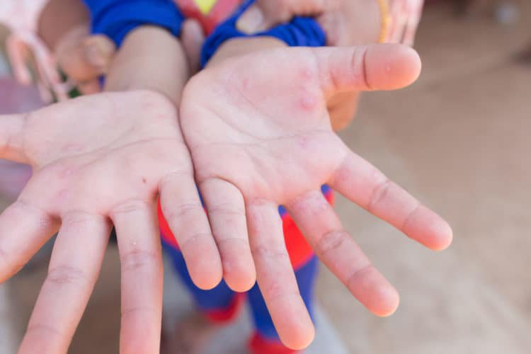

Hướng dẫn phòng & chăm sóc trẻ bị bệnh tay chân miệng
Bệnh tay chân miệng là bệnh truyền nhiễm do siêu vi trùng đường ruột Coxsackievirus và Enterovirus 71(EV71) gây ra. Bệnh xảy ra quanh năm, tăng cao vào tháng 2 đến tháng 4 và tháng 9 đến tháng 12 hàng năm chủ yếu là trẻ em dưới 5 tuổi, trẻ lớn ít gặp hơn. Bài viết dưới đây sẽ giúp người chăm sóc trẻ biết cách chăm sóc trẻ và phòng ngừa trẻ bị bệnh tay chân miệng.

1. Bệnh Tay chân miệng lây qua đâu?
Virus gây bệnh tay chân miệng lây qua đường tiếp xúc, trẻ dễ bị nhiễm bệnh nếu tiếp xúc với dịch tiết mũi họng, nước bọt, chất dịch từ các nốt phỏng, phân hoặc chất nôn của trẻ bị bệnh.
2. Triệu chứng Bệnh Tay chân miệng điển hình
Thời kỳ ủ bệnh: 3-7 ngày
Thời kỳ khởi phát: 1-2 ngày với các triệu chứng như sốt nhẹ, quấy khóc, đau họng, biếng ăn, ỉa lỏng vài lần/ngày.
Thời kỳ toàn phát: 3-10 ngày với các triệu chứng điển hình của bệnh:
Loét miệng: Vết loét đỏ hay phỏng nước ở niêm mạc miệng, lợi, lưỡi gây đau miệng, bỏ bú, bỏ ăn, tăng tiết nước bọt, chảy dãi nhiều.
Phỏng nước: Xuất hiện ở lòng bàn tay, lòng bàn chân, gối, mông; tồn tại trong khoảng 7 ngày sau đó để lại vết thâm.
Thời kỳ lui bệnh: 3-5 ngày sau trẻ hồi phục hoàn toàn nếu không có biến chứng.
Biến chứng bệnh tay chân miệng:
Biến chứng thần kinh: Viêm não, viêm màng não.
Biến chứng tim mạch hô hấp: Viêm cơ tim, phù phổi cấp, tăng huyết áp, suy tim, trụy mạch nếu không được theo dõi và điều trị kịp thời.
3. Hướng dẫn chăm sóc khi trẻ bị tay chân miệng
Thực hiện cách ly theo đường tiếp xúc, hạn chế cho trẻ ra ngoài để tránh lây nhiễm cho trẻ khác
Phối hợp dùng thuốc kháng sinh và/hoặc thuốc hạ sốt theo chỉ dẫn của nhân viên y tế.
Vệ sinh tay trước và sau mỗi lần chăm sóc trẻ.
Vệ sinh miệng và bôi thuốc vùng miệng cho trẻ theo chỉ định của bác sĩ (thường vệ sinh trước khi cho trẻ ăn 30 phút).
Cho trẻ ăn thức ăn nguội, mềm, lỏng, dễ tiêu như cháo, sữa; chia nhỏ bữa.
Giữ vệ sinh da sạch sẽ, dùng xanh - methylen để chấm lên các nốt phỏng nước.
Mặc quần áo vải mềm, rộng rãi, thấm hút mồ hôi. Thay quần áo và tắm rửa hằng ngày cho trẻ bằng nước ấm.
Theo dõi tình trạng của trẻ, phát hiện sớm các dấu hiệu cảnh báo, dấu hiệu nặng để xử trí kịp thời: Mạch nhanh, run chi, đi không vững (nếu trẻ đã biết đi). Giật mình >2 lần/30 phút.
4. Hướng dẫn phòng bệnh trẻ bị tay chân miệng
Rửa tay bằng xà phòng trước khi chăm sóc trẻ và sau khi tiếp xúc với chất thải của trẻ.
Rửa sạch đồ chơi, lau sàn nhà bằng dung dịch khử khuẩn thích hợp.
Không cho trẻ bị bệnh tới nhà trẻ, nơi tập trung đông người hoặc tiếp xúc với các trẻ khác.
Khi trẻ bị tay chân miệng có những triệu chứng bất thường, cha mẹ cần nhanh chóng đưa bé đến cơ sở y tế gần nhất để được khám và điều trị kịp thời.